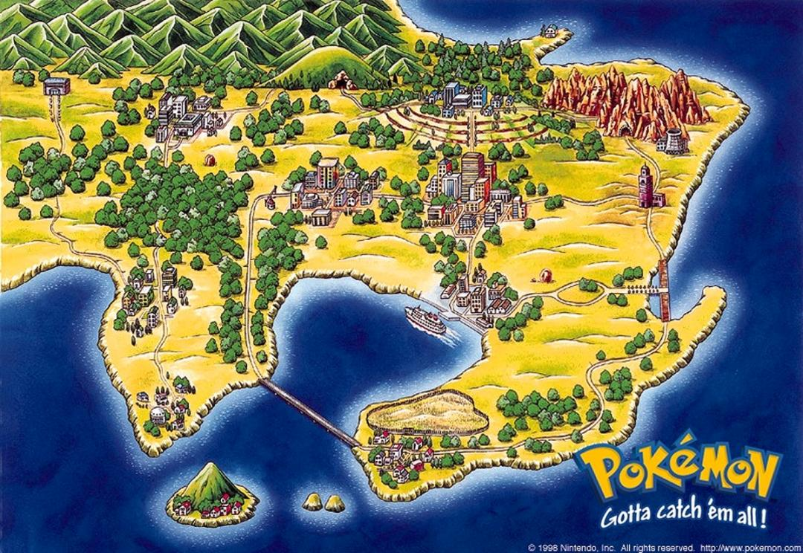
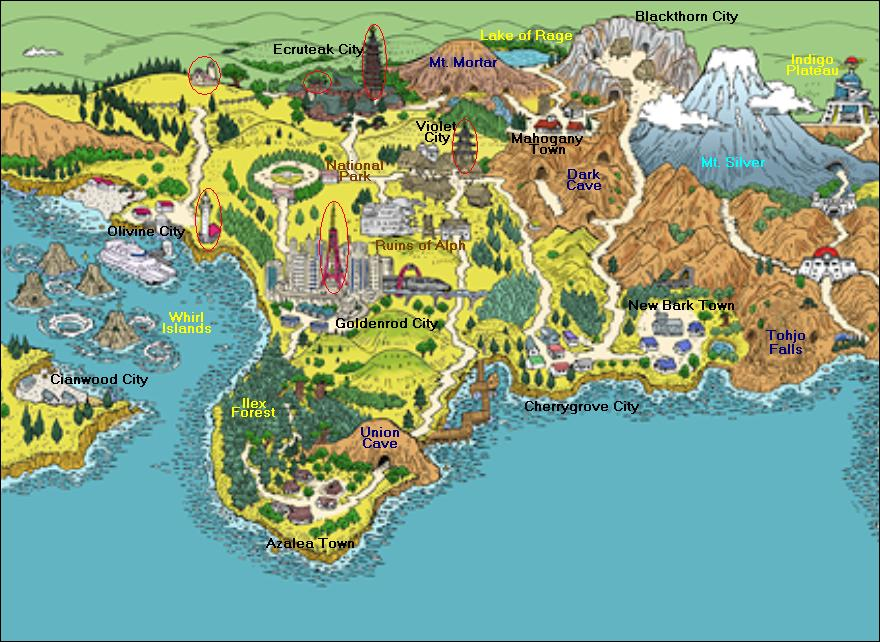
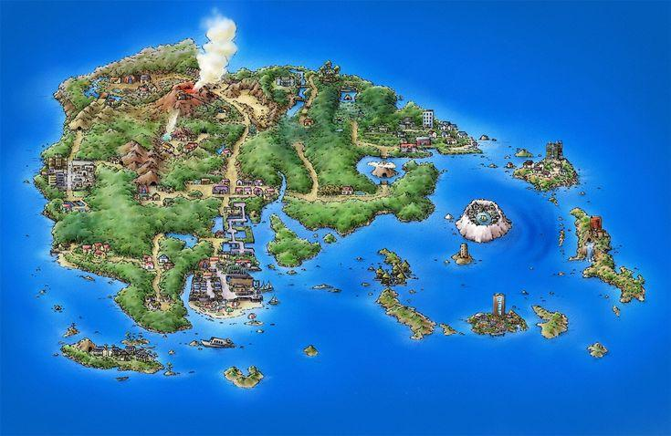
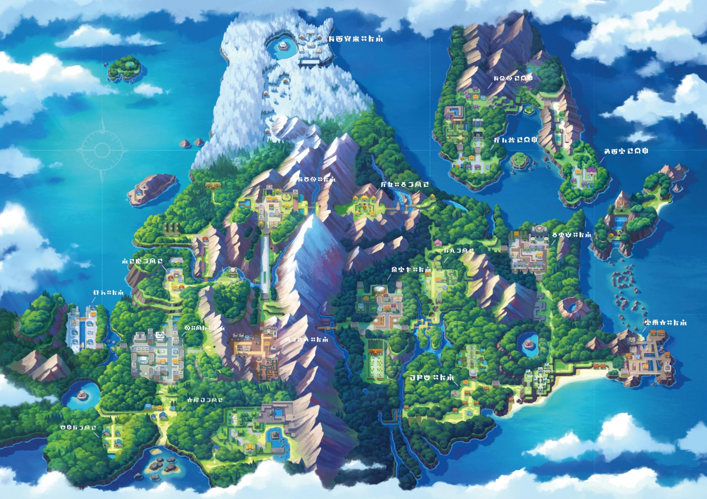
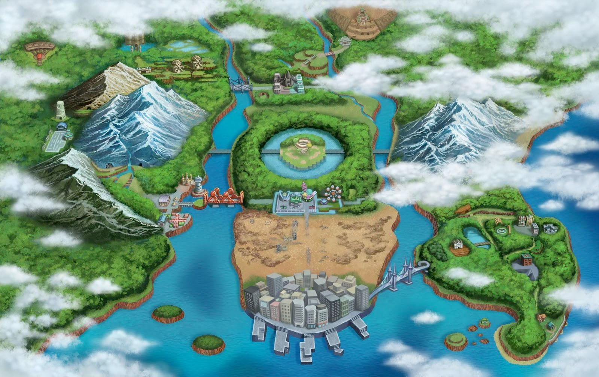
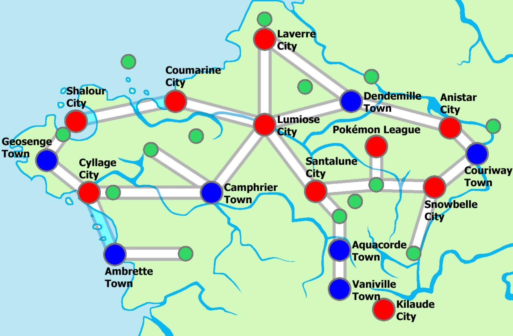
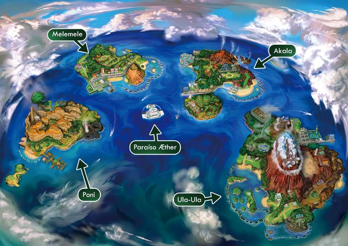
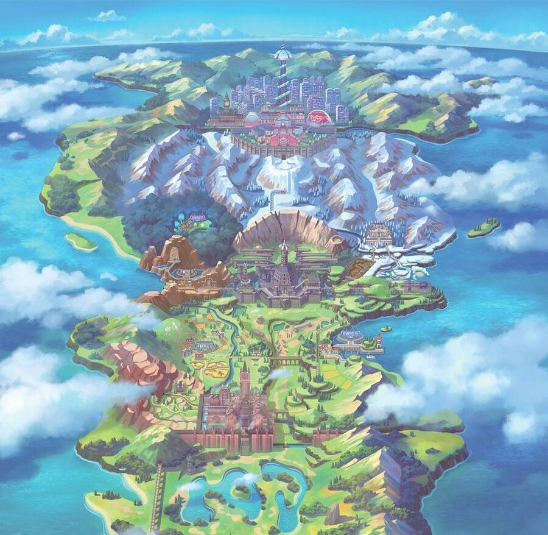
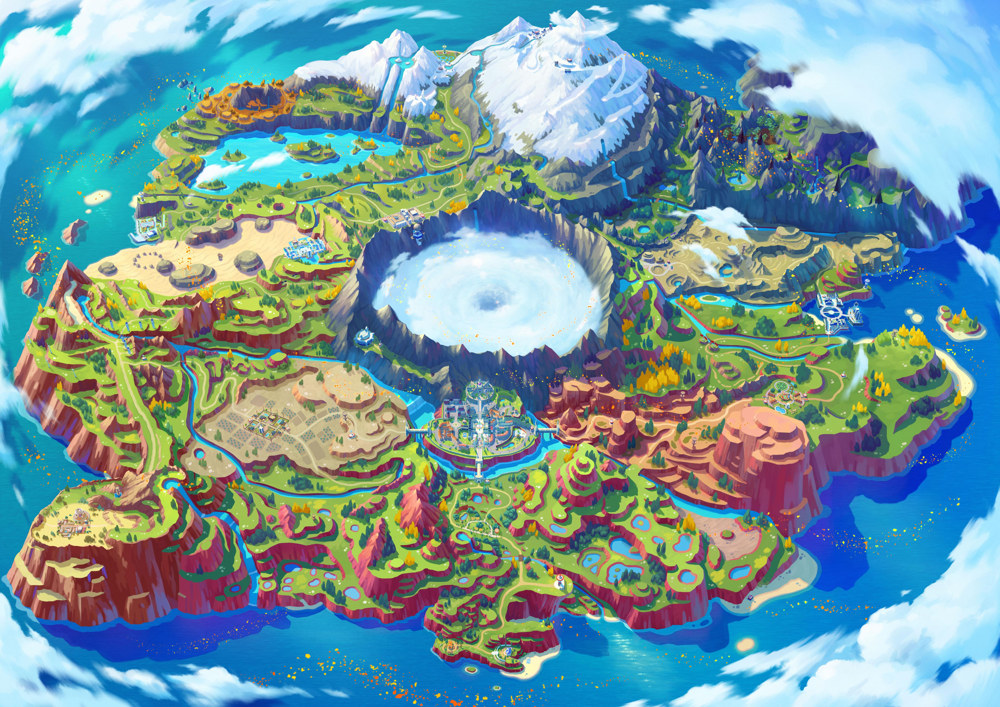

1ª GERAÇÃO
Kanto
Uma região clássica que inclui cidades como Pallet, Pewter e Cerulean. Foi o cenário dos primeiros jogos da série principal.
Bulbasaur Charmander Squirtle
Uma região clássica que inclui cidades como Pallet, Pewter e Cerulean. Foi o cenário dos primeiros jogos da série principal.
Bulbasaur Charmander Squirtle
Conhecida por suas tradições, construções históricas e lendas sobre Pokémon como Ho-Oh e Lugia.
Chikorita Cyndaquil Totodile
Uma região com ilhas, rotas aquáticas e ambientes naturais, marcada pelas lendas de Groudon e Kyogre.
Treecko Torchic Mudkip
Região montanhosa com histórias sobre a origem do universo Pokémon e criaturas lendárias.
Turtwig Chimchar Piplup
Uma região com grandes centros urbanos, cidades movimentadas e muitos Pokémon diferentes.
Snivy Tepig Oshawott
Conhecida por sua arquitetura elegante e pela introdução da megaevolução nos jogos principais.
Chespin Fennekin Froakie
Um arquipélago tropical com ilhas distintas, formas regionais e desafios especiais.
Rowlet Litten Popplio
Conhecida por seus estádios, batalhas populares e pelo fenômeno Dynamax.
Grookey Scorbunny Sobble
Uma região de mundo aberto em que treinadores exploram livremente e vivem uma aventura escolar.
Sprigatito Fuecoco Quaxly